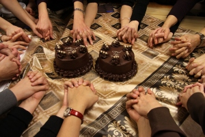

پذيرش > اخبار > ما دختران و پسران ایران بانو/ کمپین یک میلیون امضا در ونکوور


 ما دختران و پسران ایران بانو/ کمپین یک میلیون امضا در ونکوور ما دختران و پسران ایران بانو/ کمپین یک میلیون امضا در ونکوور
3 فروردین 1389 - - نسخه قابل چاپ
" ما دختران و پسران ایران بانو"/ " کمپین یک میلیون امضا در ونکوور "
تغییر برای برابری - برخی از جوانان ایرانی در ونکور به منظورهمراهی با کمپین یک میلیون امضا فعالیت خود را آغاز کردند. آنان قصد دارند با تمرکز بر مطالبات کمپین یک میلیون امضا برای برابری جنسیتی در ایران تلاش کنند. این همراهان سایتی را هم برای انعکاس فعالیت هایشان راه اندازی کرده اند که می توانید در زیر ببینید. پیوستن این یاران را به کمپین یک میلیون امضا تبریک می گوییم .
http://vancouversignforchange.wordpress.com/
همچنین آنها را در فیس بوک نیز می توانید مشاهده کنید.
http://www.facebook.com/group.php?gid=170352777346&ref=mf
گزارشی از گردهمایی آنان در 8 مارس را با عنوان گرد همائی یاران کمپین یک میلیون امضا در ونکوور به مناسبت روز جهانی زن
را نیز می توانید در همان نشانی ببینید.

آنان درباره اهداف و نحوه فعالیت شان در حرکت کمپین یک میلیون امضا، گزارشی تهیه کرده و در اختیار مان قرار داده اند که می خوانید :
« حکایت ما، حکایت نی دورافتاده از نیستان است و نغمه ما، نغمه غم انگیز اما عاشقانه فرزندانی است به دور افتاده از دامان پرمهر مادر! و مادرمان، ایران بانو که شور حضور نام و نشان و خاطره اش فضای دلمان را، کهکشان کهکشان تابناک می سازد و شوق بوسیدن دوباره رخسار با طراوتش و بوئیدن شمیم عطرآگین دامان پر عطوفتش، امید بخش جانهای مشتاقمان میشود.
در این جبر جغرافیائی اما، گر چه دوریم، با خود عهد بسته ایم، تک تک دختران و پسران ایران بانو، با میثاقی نا گفته، نا پالوده، بری از هر ریا و تزویر، که فرزندان نیک اش باشیم، ندا گونه و سهراب وار! با ضربان قلبش تپیدن گیریم و با طنین نفسش، نغمه آزادیخواهی سر دهیم. در امتداد نگاهش آفتاب عدالت را بجوئیم و بر نقش و نگار دامانش، طرح صلح بیاندازیم.
و ما دختران و پسران ایران بانو در شهری در دوردستهای سرزمینهای شمالی، جائی که آسمان سرشار از کران کران دریای آبی است و زمین سیراب از باران باران بغض های شکسته؛ با خود عهد بستیم که برنتابیم، هر آنچه بی مهری است بر زنان سرزمینمان ایران را ؛ و دست در دست هم بتازیم بر زائیده اهریمن جهل و ظلم، که نابرابری است و سرکوب، که آشوب است و دلهره.
از این روی حلقه کوچکی از فرزندان آزاده ایران زمین در آغازین روزهای فصل سرما به امید فرارسیدن بهار سبز، گرد هم آمدیم تا با هم بخوانیم، بیاموزیم و بیاموزانیم رسم کنشگری را. رسمی که در جنبش اجتماعی و فراگیر زنان ایران زمین به نام "کمپین یک میلیون امضا" متجلی می گردد و محوریت خواستهای خود را بر تغییر قوانین تبعیض آمیز در در نگرش و ساختار جنسیتی حقوق ایران قرار می دهد.
آنچه تا به امروز آموختیم ما را بر آن داشت که دریابیم، شاید اصلیترین هدف تشکیل کمپین یک میلیون امضا در ونکوور، افزایش اگاهیهای عمومی در خصوص خواسته ها و مطالبات عدالت خواهانه زنان در ایران معاصر است. بدیهی است که با توجه به شرایط ویژه کمپین از جهت رویاروئی با طیف های متفاوتی از مخاطبان که همانا ایرانیان مهاجر،پناهنده و در تبعید میباشند، شیوه گفت و گو های چهره به چهره با هم وطنانمان را با پیش زمینه های مختلف سیاسی، اجتماعی، مذهبی و فرهنگی به عنوان آغازین و در فاز اول مهمترین ابزار گسترش اگاهیها در این خصوص یافتیم. بی شک فراز و نشیبهای متعدد در روند این گفت و گوها سنگ محکی خواهد بود برای جامعه ایرانی خارج از کشور که همگام با هموطنان داخل ایران به تمرین فعالیتهای جمعی و دموکراسی بپردازند و روند روز افزون فرهنگ فردگرا در جهان معاصر را با کنشهای جمعی خود به چالش بکشانند.
در مرحله بعدی، اهتمام به جمع آوری یک میلیون امضا برای تغییر قوانین تبعیض آمیز میباشد که کمپین در راستای روند پیشنهادی اصلاحات از پایین به بالا مدّ نظر دارد . این امضاها در فاز دوم کمپین پشتیبان حقوق دانانی خواهند بود که اقدام به تنظیم لوایح قانونی بر اساس الگوی برابری جنسیتی خواهند نمود. ونکوور در این میان در راستای حمایت از این سلسله فعالیتها قصد دارد به جمع آوری حداقل ۲۰۰ امضا و ارسال آن به آدرس مطروحه در ذیل بیانیه در ایران بپردازد.
در این میان،کمپین ونکوور از ایده های خلاق در جهت نیل به اهداف آموزشی و پژوهشی خود درخصوص تاریخ مبارزات مدنی،حقوقی و سیاسی زنان در ایران و آموزه هایی که این جریانات تاریخی به ارمغان آورده اند، نسلهای متعدد فمینیستی که در ایران ظهور نمودند و نهایتا شناخت ساختار و زیربنای کمپین یک میلیون امضا در ایران و زمینه سازی برای کنشگری در این حوزه، استقبال می نماید. در این راستا کمپین ونکوور در نظر دارد به برگزاری کارگاه های آموزشی، نمایش فیلم و اسلاید و همچنین جلسات کتابخوانی اهتمام ورزد و در این میان از نقطه نظرات اعضا در خصوص بررسی و بازشناسی نقش و رسالت کمپین در خارج از کشور با توجه به پتانسیلها و موانع موجود و شرایط سیاسی کنونی در ایران بهره گیرد.
کمپین ونکوور هم اکنون سه ماهگی خود را جشن میگیرد در حالیکه در صفحه فیس بوک خود با در حدود ۴۰۰ عضو در ارتباط است و صفحه وبلاگ خود را به تازگی آماده بهره برداری نموده است. برای کمپین در این سه ماه فرصت مغتنمی فراهم گردید تا کنشگران کمپین ونکوور بسیار بیاموزند و تجربه بیاندوزند. آموختن آنکه چه بسیار نمی دانیم و باید بدانیم، آنکه چه بسیار نیا موخته ایم و باید بیاموزیم، تجربه کنیم و بیازماییم؛ البته با نگاهی هوشیار و انتقادی به وقایع پیرامون خود.
در این مدت کوتاه کمپین ونکور توجه حامیان متعددی را به خود جلب نموده است، اما جنبش بر این نکته تاکید دارد که خواسته های زنان می بایست همواره در اندیشه و ذات مستقل باقی بماند و حفظ شان و شرف جنبش اجتماعی کمپین یک میلیون امضا با هیچ اندیشه و خط سیاسی و بلند پروازی و جاه طلبی های تاریخی ساختار های مرد سالار، خشونت طلب و هیاهو سالار قابل معامله نمیباشد. از این روی آنچه در این مجال کوتاه مورد توجه دوستان جوان کمپین قرار گرفت تاکید بر این نکته بود که جنبش زنان گرچه از لحاظ حامیان متکثر میباشد، اما پیام اصلی و محور مرکزی خواسته هایش مستقل و غیر قابل تغییر می باشد و در این راستا تصویر کلی خواسته های این جنبش اجتماعی در ورای مرزهای ایدئولوژیک سیاسی و مذهبی ترسیم میگردد. جنبش ونکوور آموخت که برای داشتن جامعه چند صدائی، نقش فعالیت های اجتماعی،فرهنگی، هنری و مذهبی زنان در به وجود آوردن چنین فضائی چه در میان ایرانیان خارج از کشور و چه در ایران، نقشی بی بدیل است و این وظیفه خطیر با همت هیچکس به جز خود خود زنان میسر نخواهد گردید و تعلل در این هنگامه، همانا حذف ندای عدالتجوی و آزادیخواهانه زنان را در پی خواهد داشت.
در این راستا، کمپین یک میلیون امضا در ونکوور، دست یاری ایرانیان اندیشمند و کنشگر را به گرمی میفشارد تا با ایده های خلاق، نیروهای مثبت و عملکرد خالصانه شان، راه را تا رسیدن به بزرگترین آرمان بشریت که همانا صلح، عدالت و آزادیست هموار سازیم و تا آنجا که در توان داریم در گسترش آگاهی های عمومی و و زدودن اهریمن جهل در زمینه حقوق زنان و شناسایی و ارج نهادن به کرامت انسانی آنان اهتمام ورزیم. حقوقی که ساختار بنیادین و وجاهت تاریخی خود را همواره از نگرشی که زاییده تفکر، تعبیر و تدبیر مردان جامعه بوده است به میراث برده است و از این روی ما زنان و مردان آزاده، دختران و پسران ایران بانو و میراث داران چنین ساختار حقوقی یک جانبه نگر، دوشا دوش یکدگر بر آنیم تا فلک را سقف بشکافیم و طرحی نو در اندازیم.»
ارسال به
بالاترین
،
توییتر
،
فریندفید
،
فیسبوک
در همين بخش :
 پروین ذبیحی برنده جایزه حقوق بشری سازمان غيردولتى اتريشى سودويند شد پروین ذبیحی برنده جایزه حقوق بشری سازمان غيردولتى اتريشى سودويند شد
پخش کارت پستال و بروشور در روز جهانی زن در تهران
تمدید زمان برای امضای بیانیهی جمعی از فعالان زن به مناسبت هشت مارس
مجوزی که در نطفه خفه شد
بیش از 2000 امضا در اعتراض به تبعیض های آموزشی به مجلس تحویل داده شد
ديگر بخش ها :
طرح یک میلیون امضا
|
مقالات
|
سایت نوشته ها
|
اخبار
|
گزارش كمپين
|
گفت و گو
|
علیه سکوت
|
كوچه به كوچه
|
نامه های شما
|
گزارش ویژه
|
گفتگو با اعضا
|
ویژه سالگرد کمپین
|
تصویر برابری
|
دل آرام علی
|
تریبون
|
مقالات
|
تاریخ شفاهی
|
خارج از چارچوب
|
کتابخانه
|
درباره کمپین
|
کمپین در شهرها
|
کمپین در بند
|
صدای تغییر
|
ویژه 22 خرداد
|
لایحه حمایت از خانواده
|
گالری
|
عشا مومنی
|
امیر یعقوبعلی
|
خدیجه مقدم
|
راحله عسگری زاده و نسیم خسروی
|
پروین اردلان،جلوه جواهری، مریم حسین خواه، ناهید کشاورز
|
زینب پیغمبرزاده
|
سعیده امین، سارا ایمانیان، محبوبه حسین زاده، ناهید کشاورز و همایون نامی
|
احترام شادفر
|
نسیم سرابندی زاده،فاطمه دهدشتی
|
وبلاگ مهمان
|
پرونده خرم آباد
|
دستگیری ها
|
مریم مالک
|
پرستو اللهیاری
|
مهرنوش اعتمادی
|
سمیه رشیدی
|
Other Languages
|
همراهان
|
«فراخوان کمپین ده روز با بهاره هدایت»
| English
|